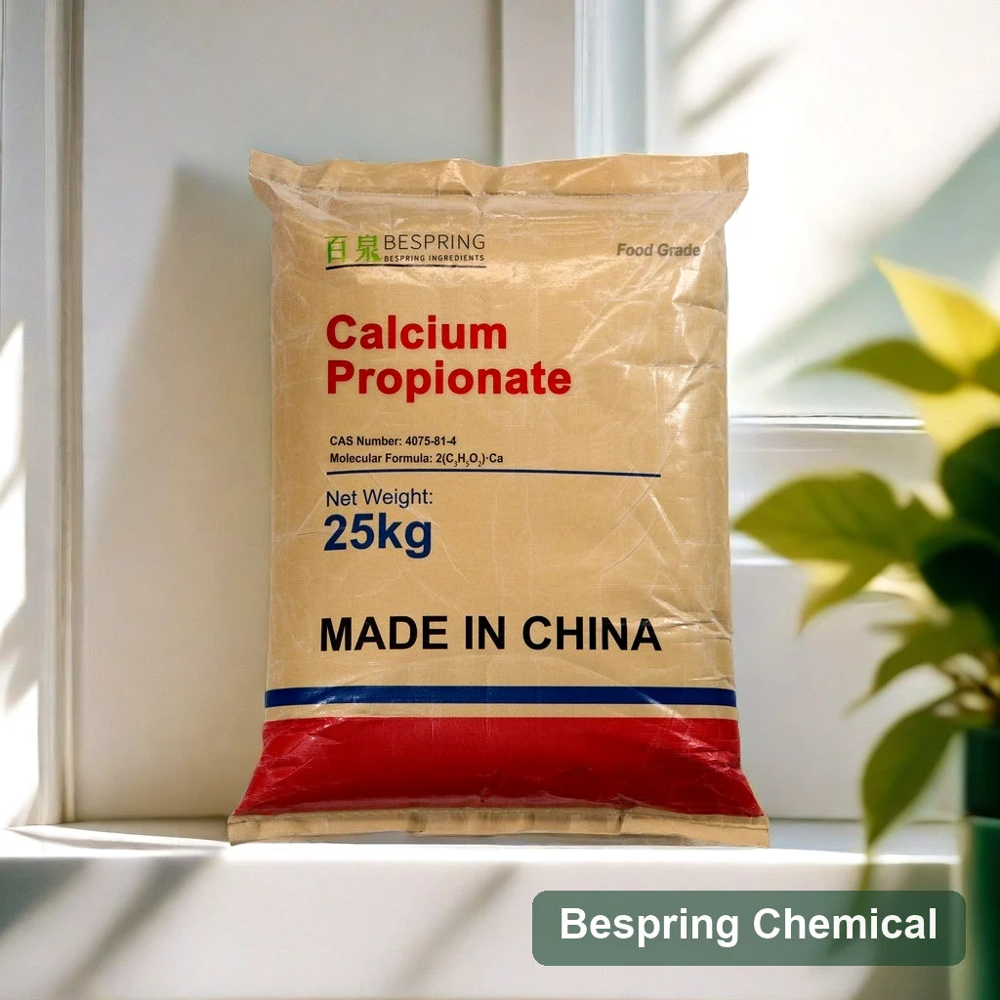
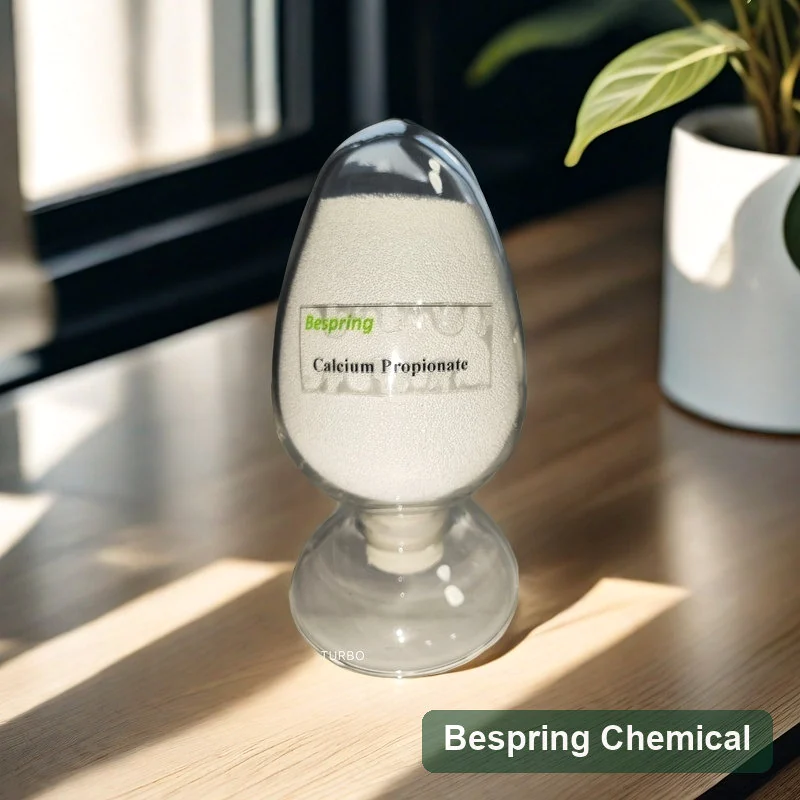
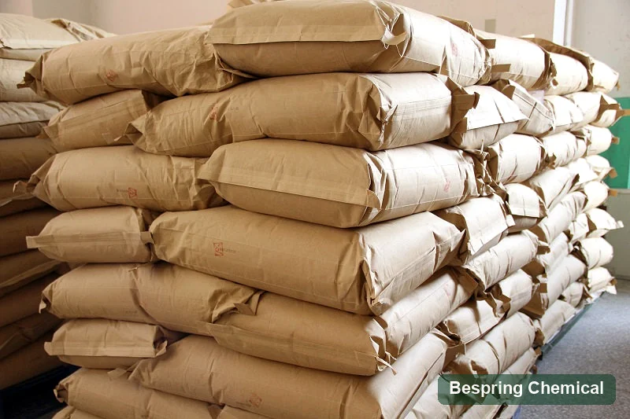
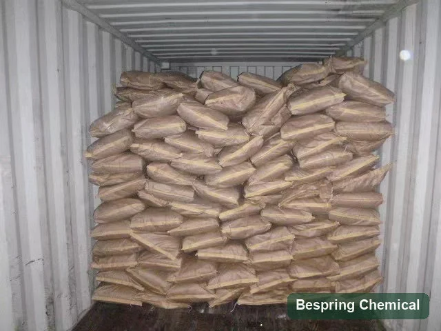

단 하나 ingredient 칼슘 propionate
허용된 보전 신청을 위한 음식 급료 칼슘 propionate. 상업적인 참고 테이블을 검토하고 공급한 보기 결과, 그 후에 제안되는 정확한 급료를 위한 서명한 명세를 찬성하십시오.
식품 보존 · 항균 · E282

제품 이미지 · 주문시 급료와 포장을 확인합니다
필요한 사양 또는 FCC 판, 단일 성분 또는 혼합, 입자 형태, 수량, 포장 및 목적지 포함.
Bakery 집중Antimould와 antirope 기능
명세서 검토표준과 FCC 판을 주관하는 확인
혼합 문의의논 구성 및 공정 요구 사항
Batch 문서현재 명세와 COA 요청에
제품 개요
칼슘 프로 피노 에이트라고도 불리는 칼슘 프로 피노 에이트는 프로 피노 산의 칼슘 소금입니다. CAS 4075-81-4, 공식 C6H10CaO4282와 E282에서 ,. JECFA 정체 사양 대부분의 연초 propionic-acid odour에 흰색 결정, 분말 또는 과립을 설명합니다. 당신의 혼합 및 추가 프로세스에 대한 실제 입자 형태에 동의.
칼슘 propionate는 적당한 빵집 체계에 있는 susceptible 스포일 형 그리고 밧줄 형성 박테리아를 금하기 위하여 이용됩니다. 그것의 효력은 음식 PH, 물 활동, 온도, 복용량, 배급 및 유기에 달려 있습니다. 빵-스푼 fungi의 실험적인 연구 성능이 완성 된 정립에서 확인되어야한다는 것을 보여줍니다. 그것은 보편적 인 복용량 또는 경로를 설정하지 않습니다.
공식과 186.22 g/mol molar 질량은 결정화의 물 없이 칼슘 propionate를 설명합니다. 수화한 물자가 지정되면, 그것의 수화 모양, 대응 molar 질량 및 분석실험 기초를 확인하십시오. 물 결과는 혼자 결정 모양을 식별하지 않습니다.
당신의 시장에 제품을 일치
E282는 첨가물을 식별합니다; FCC는 명세 compendium를 지명합니다. 이들은 상호적으로 독점적인 급료가 아닙니다. 주 지배 기준과 판, 고객 한계 및 목적지 시장 그래서 판매는 제안한 물자 및 문서를 확인할 수 있습니다.
허용된 보전 신청을 위한 음식 급료 칼슘 propionate. 상업적인 참고 테이블을 검토하고 공급한 보기 결과, 그 후에 제안되는 정확한 급료를 위한 서명한 명세를 찬성하십시오.
FCC 표준 옵션에 대한 판매 요청. 고객 또는 적용 가능한 규정에 따라 필요한 판을 지정하고 해당 제한, 분석 방법 및 지원 문서를 요청하십시오.
정의 보존 시스템의 추가 방법이나 정립 통화가 될 때 혼합을 토론합니다. 제안 된 구성에 대한 모든 성분, 활성 내용, 캐리어, 라벨 선언 및 동의 성능 기준을 확인하십시오.
FCC 재료와 혼합은 자신의 합의 된 사양을 요구합니다. 아래 단일-ingredient 참조 테이블은 모든 제안 된 옵션을 정의하지 않습니다. 연락처 신청 및 합격 기준에.
Preservation 신청
빵이나 베이커리 제품, 스포일 타겟 및 제조 공정으로 시작하십시오. 확인 Codex 음식 종류 제공 또한 레벨 또는 라벨 선언을 선택하기 전에 대상 시장 규칙.
최종 조리법, 패키지 및 unpackaged 실험실 샘플에서뿐만 아니라 배포 조건에서 금형 및 로프 제어를 Evaluate.
효모화된 제품을 위해, 감시자 증거 시간, loaf 양 및 풍미 뿐 아니라 형 자유로운 생활. 부식 수준 및 반죽 PH를 함께 따르십시오; 발효 겸용성은 제품 예심을 요구합니다.
제품 습기, 물 활동, 과정 상태 및 완성되는 포장 체재에 대하여 방부제 체계를 유효하십시오.
칼슘 propionate가 건조한 성분 혼합을 통해서 공급될 때 입자 배급, 취급 및 노출량 견실함을 사정하십시오.
이 페이지는 음식 급료 빵집 sourcing를 포함합니다. 완성되는 음식을 위한 법적인 사용 그리고 레테르를 붙이는 것은, 제안한 급료를 자격이 하고 위생, 굽기, 냉각 및 포장 통제를 따라 보전 체계를 유효하게 합니다.
원료에서 재고 유효 기간
유용한 칼슘 프로 피오 네이트 재판은 공정 및 포장 효과의 보존 성능을 분리합니다. 제어를 정의하고 아래 변수를 문서하고 실제 저장 및 배포 조건에서 반복 배치를 평가합니다.
기록 반죽과 완제품 PH, 습기 및 물 활동. Propionate는 프로피온산을 가진 PH 의존하는 평형에 참여합니다; PH를 가진 부화한 산 분수 변화.
기록적인 복용량 및 그것의 기초 (예를 들면, 가루 무게 또는 완성되는 음식 무게를 위해), 추가 점, 용해 또는 건조하 차단 방법, 섞기, 발효작용, 증거 시간, 굽기 단면도, 양 및 sensory 질.
포스트 빵 노출, 냉각 시간 및 접촉 표면을 통제하십시오. Recontamination는 정립 변화의 효력을 손상할 수 있습니다.
임의 패키지와 도전 현실적인 저장 온도, 수송 시간 및 오프닝 조건을 반복 배치에 사용하십시오.
기술적인 맥락: WHO/JECFA propionate 산의 토론 – 소금 활동 으로 PH, 물 활동, 온도 및 곰팡이 응답에 대한 주요 연구. 이 발견을 사용하여 시험 변수를 선택, 생산에 실험실 농도를 직접 전송하지.
사용 방법 포장된 빵 신청 가이드를 위한 칼슘 propionate 구조 보존성 심사, 패키지 비교 및 유통 기한 검증.
기술 정보
테이블은 공급한 상업 한계 및 예 결과를 유지합니다. 초기 비교를 위해 그것을 사용하십시오; 실제적인 배치 질을 평가할 때 시험 날짜와 방법을 가진 많은 IDentified COA를 요구하십시오. 구매 합격은 공급한 많은을 위한 승인한 명세 및 COA를 요구합니다.
작은 화면에서는 표를 가로로 스크롤하여 네 열을 모두 비교하세요.
스와이프하거나 키보드를 사용하여 모든 열을 확인하십시오
| 시험 모수 | (주) | 제품 정보 | 예제 결과 |
|---|---|---|---|
| (주)아이텍 | % | 99.0–100.5 | 99.51 |
| 물의 물 | % | ≤ 4.0 | 3.2 |
| 25°C에서 10% 수용액의 pH | — | 7.5–10.5 | 8.0 |
| 중금속 (Pb로) | mg/kg | ≤ 10 | < 10 |
| 불화물 (F) | % | ≤ 0.003 | < 0.003 |
| 물 불용성 사정 | % | ≤ 0.2 | 0.12 |
| 마그네슘 (M MgO) | % | ≤ 0.4 | < 0.4 |
이 값은 공급된 한 결과 세트의 예시입니다. 추적성을 위해 원본 COA와 로트·날짜 식별 정보를 요청하세요. 규격 한도, 실제 배치 결과 및 FCC 원료나 혼합물의 요건을 구분하세요.
방법 및 보고 기초: 제공된 함량 표시 기준과 분석 방법은 기재되지 않았습니다. 건조 기준인지 수령 상태 기준인지, Water가 수분 정량인지 건조감량인지, 10% pH 용액의 준비 기준을 확인하세요. 원자료의 “Pb²⁺ (Heavy metals)” 표기는 모호하므로 납 한도 평가 전에 시험 정의와 개별 납 결과를 확보하세요.
의 특징 JECFA 모노 그래프 건조 기준 함량 ≥98.0%, 수불용분 ≤0.3%, 불화물 ≤30 mg/kg, 납 ≤5 mg/kg, 철 ≤50 mg/kg 및 105°C, 2시간 건조감량 ≤4%를 규정합니다. 상업 함량 범위 99.0–100.5%는 기준과 방법을 확인한 뒤에만 직접 비교할 수 있으며 표에 개별 납·철 결과가 없습니다.
불화물과 EU E282: 0.003%의 상업적인 한계는 인용한 JECFA 숫자 한계와 일치하는 30 mg/kg (30 ppm), 동등합니다. EU 규정 966/2014 E282 불화물 한도를 20 mg/kg로 정하므로 기재된 상업 한도는 더 느슨합니다. 예시 결과 <0.003%만으로 ≤20 mg/kg를 입증할 수는 없습니다. EU 적합성이 필요하면 전체 EU 규격과 충분히 정밀한 배치 결과를 요청하세요.
더 보기 FAO/WHO JECFA 칼슘 propionate 단청, U.S. eCFR 21 §184.1221 으로 NIH PubChem 화합물 기록. 이 2025 공식 CFR 텍스트 칼슘 propionate를 GMP의 밑에 지정된 식품 카테고리를 위한 항균 대리인으로 식별하고 지명한 FCC 판을 통합합니다. 이것은 Bespring의 제품의 증명서가 아닙니다 규제 규정입니다. 첨가물 ID, 순수성 필요조건 및 완성품 허가는 따로따로 평가되어야 합니다.
기술 참고자료 검토일: 2026년 10월 4일. 목적지 시장에 적용되는 최신 표준, 서명된 상업 규격서 및 배치 서류를 확인하세요.
공급 능력
표준, 판, 분석실험 기초 및 “음식 급료” 혼자 의지 대신 고객 별 한계를 지명하십시오.
별도의 납 및 기타 필수 오염 시험, 방법 및 보고 대상 시장의 제한을 확인합니다.
베이커리 공정의 건조 혼합 및 유통에 영향을 미치는 영향에 영향을 미치는 영향의 외관, 입자 형태 및 취급 기준.
TDS, SDS 및 대표 COA를 정확히 등급 또는 블렌드에 요청하십시오. 선적 COA를 요구하고 인증서의 제품, 사이트 및 유효성 범위를 확인합니다.
포장 및 물류 참조
제품 사진은 25 kg의 가방을 보여줍니다. 제안 된 순 중량, 가방 건설, 팔레트 배치, 컨테이너로드 및 인용 선반 수명을 확인합니다. 샘플, 창고 및 선적 사진은 참조 취급입니다. 현재 가용성 및 선적 세부 사항은 주문 확인을 필요로합니다.



저장 & 취급
구매자 질문
그것은 방부제, antimould 및 antirope 성분으로 사용됩니다. 그것은 빵과 굽은 상품과 특히 연관되고, 또한 다른 음식 종류에서 목적지 시장 규칙 허용 사용될지도 모릅니다.
그것은 susceptible 스포일 형과 밧줄 형성 박테리아를 금할 수 있습니다. 음식 PH는 propionic 산산/propionate 평형에 영향을 미칩니다; 물 활동, 온도, 복용량 및 배급은 또한 결과에 영향을 미칩니다. 형 자유로운 생활 및 발효작용 겸용성을 설치하기 위하여 완제품 예심을 사용하십시오.
No. E282와 INS 282는 칼슘 propionate를 확인합니다; FCC는 명세 compendium입니다. 칼슘 propionate 급료는 적용 가능한 시장 규칙 및 지명한 FCC 판 둘 다 만나야 할지도 모릅니다. 이 상표를 분리하기 보다는 오히려 정확한 명세 및 지원 결과를 요구하십시오.
여러분의 정립 및 추가 방법에 대한 블렌드에 대한 문의 판매. 전체 구성, 활성 콘텐츠, 캐리어, 라벨링 및 합격 기준을 확인; 이 페이지에 단일-ingredient 사양은 블렌드를 설명하지 않습니다.
그들은 동일한 산의 소금 그러나 다른 cations 및 첨가물 ID가 있습니다: 칼슘 propionate는 E282/INS 282입니다; 나트륨 propionate는 E281/INS 281입니다. propionic 산 동등한 것, 칼슘 또는 나트륨 기여, 육체적인 모양 및 조리법 겸용성을 비교하십시오. 다른 사람에 한개를 replacing는, 자동적인 동등한 무게 대변인이 아닙니다 공식화 및 검증을 요구합니다.
모든 빵에 대한 보편적 인 추가 수준이 없습니다. 먼저 식품 카테고리 및 시장의 허용된 사용 및 계산을 설정 한 다음 증거 시간, 볼륨 및 풍미를 검사하면서 스포일리지 타겟에 대한 제어 재판을 수행합니다. 금액이 밀가루, 반죽 또는 완제품 중량에 계산되는지 여부.
아니. 그들은 공급된 참고 결과 세트입니다. 실제 선적 제비 및 방법을 식별하는 COA를 요구하고, 동의한 명세로 그것을 비교하십시오. 그 결과로 문턱 보다는 더 적은으로 보고된 결과는 더 엄격한 한계를 가진 적합을 설치하기 위하여 충분히 정확할지도 모릅니다.
예. 정확한 표준 또는 혼합 제품에 적용 가능한 서류를 요청하십시오. 선적 COA는 동의한 구매 명세에 대하여 검사되어야 합니다.
지배 기준과 판, 긴요한 한계, 분말 또는 과립상 선호, 단 하나 성분 또는 혼합, 양, 포장, 목적지, 음식 신청, 문서 및 납품 표적을 제공하십시오.
당신의 평가를 계속
의 장점 나트륨 propionate를 가진 칼슘 propionate 활동적 기반 및 cation 기여를 위해. 상영시 빵집 보전을 위한 칼륨 sorbate, 당신의 자신의 제품에 있는 생물, PH 및 과정을 평가하십시오; 다른 방부제는 그들의 자신의 복용량 및 겸용성 검토를 요구합니다.
sourcing 대화 시작
제품 선택 및 착륙 비용을 결정하는 기술 및 물류 세부 사항을 공유하십시오. 판매는 관련 사양, 문서 및 상업 제안과 함께 응답 할 수 있습니다.
당신의 급료 및 목적지 시장을 말하십시오 그래서 우리는 당신의 순서를 위해 어떤 문서가 유효하다는 것을 확인할 수 있습니다.
외부 참조는 일괄 인증서 또는 Bespring 제품 사양이 아닙니다.